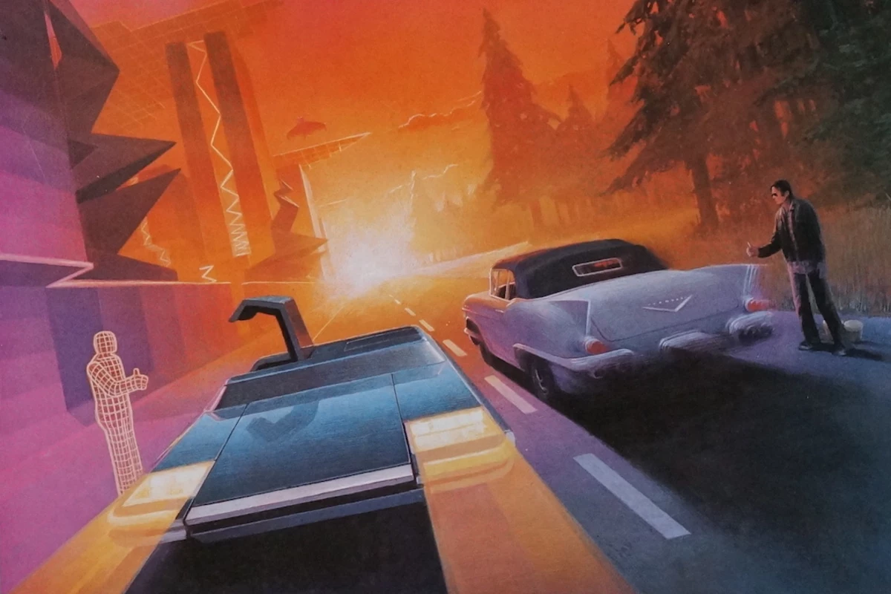

My transition journey

2025
October (last week)
After surpassing my three week long delay due to syringe fear from taking a blood test (and also the fear of actually making a decision big as this), I decide to actually follow through taking hormones. The first effect was actually scary cause my libido went down, as expected, but my mind wasn't at the same pace, so I felt disconnected as hell.
November
Wonderful second week, I now had feelings —crazyy—. The latter half of my life I've felt neutral or empty, so now having the intercalled happy and sad day was awesome, cause even the sadness will always be better than nothing.
Some secondary characteristics showed promise, but ain't gonna be specific.
Was super scared of going through sonography at first, cause some stranger rubbing gel in me sounds incredibly embarassing, but it was actually chill. Also any fear of having cancer or something were solved cause I was real good healthy. I hadn't done any examination, including blood tests, in at least eight years, so those constant (two) doctor visits were scary.
Unrelated: what the hell is Blondie going on about with this whole eating cars business. And what does it have to do with Grandmaster Flash? I was listening to Autoamerican while writing and it really got me, like... -.-
December
Despite the transition going well, the end of semester blues always drag me down, but I'mma focus on the positive. I felt like my nipples grew inwards, but nobody corroborates this so I'm just gonna give my self the certificate of insanity.

But they did grow somewhat and now I'm unsure about white shirts. One day I'mma
start
wearing bras and this will be fixed, but not now cause I'ts 30°C and I'm not uphold by any
social
expectations yet, I'm a free man woman. Also they burn like crazy and I lose my
concentration
completely when that happens. Can't even get mad cause I asked for that.
The other symptom I'm sure of is my body hair thining out, I almost don't need to shave no more. I keep freaking out seeing symptoms that ain't there, but I'm only talking about them when and if they actually appear.
2026
January
What is with that chest hair showing up? Thought I signed off that! (It wasn't there before and my t levels are on the floor). In better news, had a funny growth spurt on which my nipples increased half the size in the turn of a day, making me temporarily feel tingling in every t-shirt again.
At the start of the transition I was sure I wouldn't ever want to go through surgeries, cause "I didn't even care about my voice, my shape or my dick" (I did despise having balls though), but now I realize I was just trying to avoid hard feelings. It all shatered to me after seeing someone who not only did voice training but had gone through the scary surgery. Her courage and the results really touched me, but put me out of my nihilist comfort zone.
I realize now that I maybe do want those things (I'm not sure like I was before of not), what was leading me to believe otherwise was the horror of going through a procedure or failing to change. It could maybe go wrong, and if it goes right I would still have a very painful recovery or adaptation process. What I now know, at least, is not wanting the phantom sensation no more, of expecting some-thing and it being missing.
Two videos that hit deep: In-depth look into Zero Depth Bottom Surgery 1 year later MTF and Vtuber gets MTF Vocal Feminization Surgery - Hear her voice before and 1 year after!!
Having small ass tits (coming from none) really increased my confidence, cause now I feel corrected. I'm like the Cyberpunk 2077 of this town.
July
Jesus, how much has changed from january. Our wardrobe is now overflowing, because we added clothes to a closet which was already full, for a male person, so it just got excess that will diminish as I get rid of the old clothes. Going to stores isn't actually that bad, I just needed to get used to it despite the autistic fears. I type this in a nice cheap simple blue dress I got from C&A (with deep pockets!!).
The body has barely changed, despite me gaining 5 kg from the antipsychotics (which don't work by the way). Supposedly the weight has gone to my ass, thighs and breasts, but I haven't seen any change myself (my mother swears I've got more cake now). My genes are not promissing, my mother says her breasts were my size pre augmentation, and I still pass as a dude with them. They are only visibly present if I actively choose tight clothing.
I'm at the tipping point of coming out to the family and college, but I still need to get a move on that. I already showed upp to classes with a skirt on and nobody seemed to care. I don't know if I got clocked or if they think I'm a deconstructed man (does this term exist in english?).
I've been dabbling with discrete makeup. Now I gotta learn how to use an eyeliner. I want to buy eyeshadow.
I've started voice training, but I'm still on the "Chords of Steel" phase, where I'm strengthening the cords and starting some basic speech exercises. It's actually really tiring I had no idea it took this much mental effort to try and change the way you speak. It's taking a lot out of Lou especially, who is a male headmate of mine.
We've gotten a start at laser hair removal at my legs. It just hurts at the ankles, the rest is fine. They through some freezing air at the skin so you don't feel anything, depending on what center you're getting the treatment.
The libido has not come back, and I don't miss it honestly. Hell, even desire for other people seems to be gone, I've turned asexual for the time being.